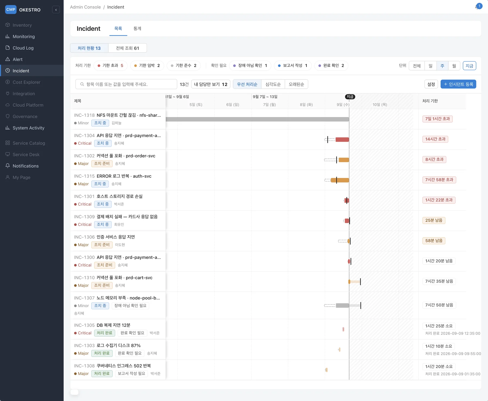
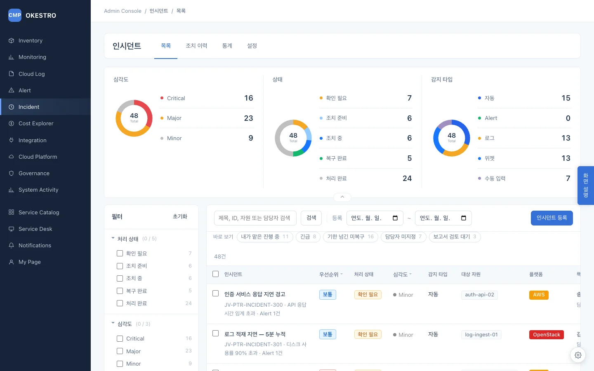
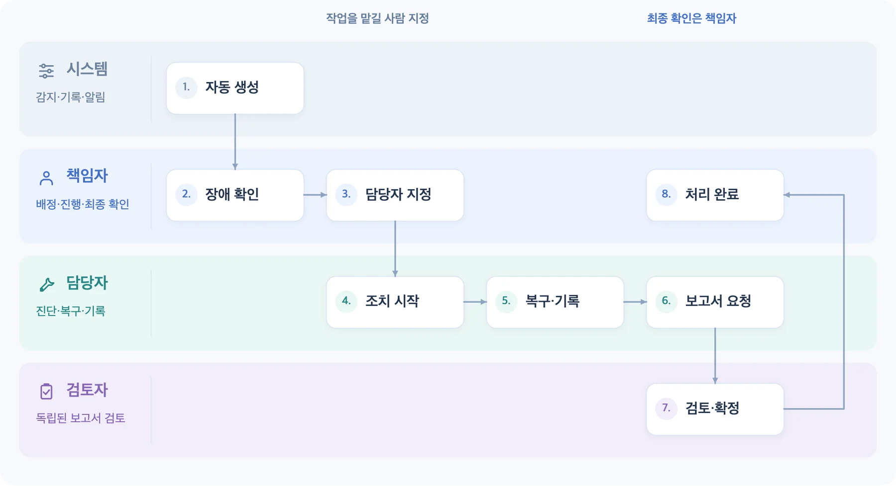
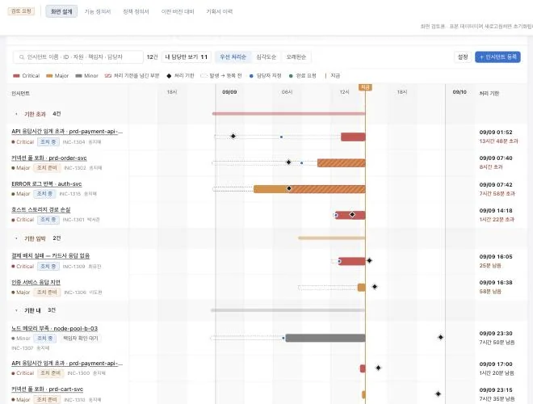
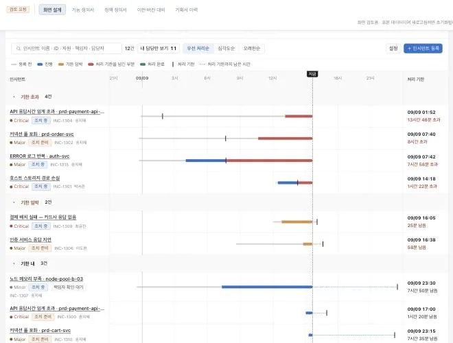
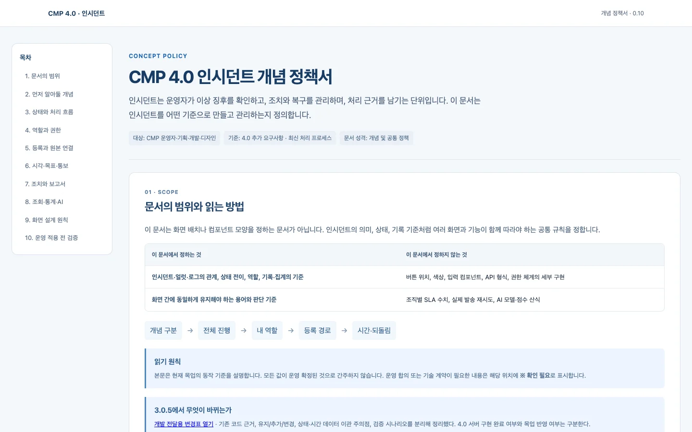
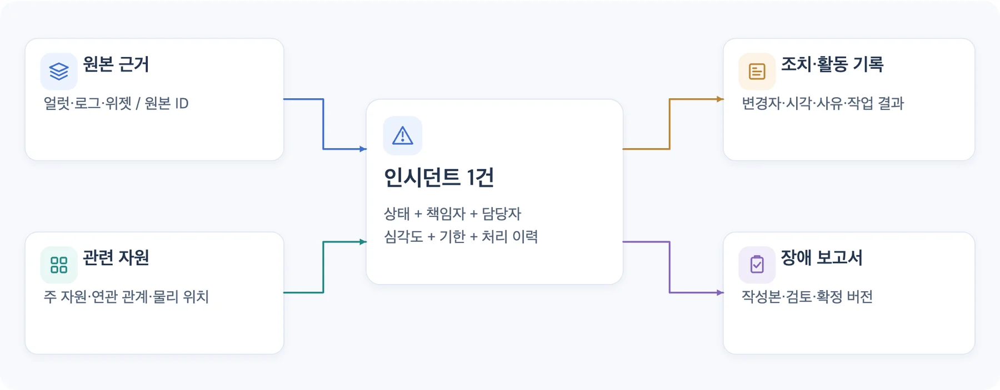
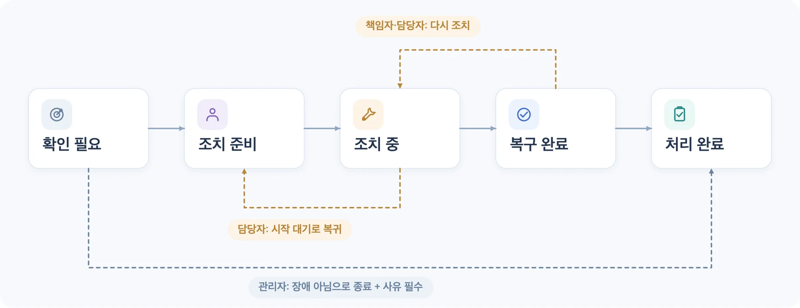
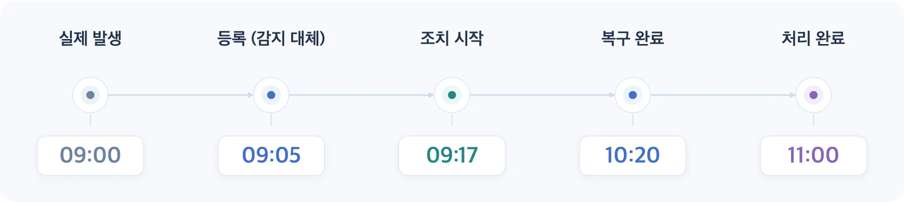

오케스트로 · CMP 4.0
인시던트
장애가 몇 건인지가 아니라, 무엇부터 처리할지가 먼저 보이게 했습니다.
인시던트는 CMP에서 장애를 등록하고, 조치하고, 보고서로 마무리하는 기능입니다. 운영자, 책임자, 검토자가 같은 장애를 서로 다른 단계에서 다룹니다.

문제
장애가 몇 건인지는 보였지만,
무엇부터 처리할지는 보이지 않았습니다
첫 목업은 맨 위에 건수 차트가 있었습니다. 들여다보니 화면 배치보다 먼저, 무엇을 어떻게 세는지가 정해져 있지 않았습니다.
1 · 기한
늦게 등록할수록 여유 있어 보였습니다
처리 기한을 등록 시각부터 세서, 급한 장애가 목록 아래로 밀렸습니다.
2 · 건수
묶음 건수를 더하면 실제보다 많았습니다
한 장애가 「책임자 확인 필요」이면서 「기한 초과」면 두 묶음에 모두 세어졌습니다.
3 · 화면 구성
리뷰어마다 원하는 목록이 달랐습니다
처음 정한 「한 목록에 섞기」 안도 실제 화면에서 어떻게 보일지 확신이 없었습니다.
02:00에 난 Critical 장애(기한 2시간)를 09:00에 등록하면
화면에는 「2시간 남음」인데, 실제로는 이미 5시간을 넘긴 장애입니다.

사용자
같은 장애를, 세 역할이 다른 질문으로 봅니다
누가 언제 손대는지부터 정했습니다. 역할이 정해져야 기한, 건수, 처리 시간을 어디서부터 어디까지 셀지 정할 수 있었습니다.
운영자
지금 기한을 넘긴 장애는 무엇인가
기한을 넘긴 장애부터 처리합니다. 첫 화면에서 처리할 것이 바로 보여야 합니다.
책임자
얼마나 빨리 복구하고 있나
묶음 건수로 팀 상황을 판단하고, 처리 완료를 확인합니다. 건수의 합이 실제 장애 수와 같아야 믿고 씁니다.
검토자
이 보고서를 확정해도 되나
조치가 끝난 장애의 보고서를 확인하고 확정합니다.

판단 기준
모든 결정을 세 가지 기준으로 내렸습니다
화면을 그리기 전에 기준부터 세웠습니다. 아래 결정들은 모두 이 기준에서 나왔습니다.
처리할 것이 먼저
첫 화면은 개수보다 「지금 손대야 할 장애」를 보여 줍니다. 통계는 별도 화면으로 뺍니다.
한 번만 센다
기한, 건수, 처리 시간은 세는 기준을 하나로 정해, 어느 화면에서 봐도 같은 숫자가 나오게 합니다.
말 대신 시안으로
의견이 갈리면 오래 논의하지 않고, 같은 데이터로 그려서 나란히 비교합니다.
결정
무엇을 두고 고민했고, 왜 이쪽을 골랐나
대안이 있었던 결정만 골랐습니다.
처리 기한은 언제부터 세나요?
등록 시각 또는 감지 시각부터 센다
장애가 실제로 난 시각부터 세고, 복구되면 멈춘다
등록, 감지, 실제 발생을 실제 사례에 대 보니 등록 시각 기준은 늦게 등록한 장애일수록 기한이 넉넉해 보였습니다. 급한 장애가 아래로 밀리는 구조라, 기한의 시작은 장애가 실제로 난 시각이어야 했습니다.
기한은 어떤 모양으로 보여 주나요?
타임라인으로 보여 주기, 또는 경과 막대로 보여 주기 중 하나
둘 다 그려 본 뒤, 기한 구간 묶음과 현재 시각 기준선을 합친 방식
한 가지만 고르기 전에 두 표시 방식을 같은 데이터로 그려 비교했고, 각각에서 읽기 좋은 부분을 합쳤습니다.


묶음별 건수는 어떻게 세나요?
조건에 걸리는 묶음마다 모두 센다
책임자 확인 → 기한 초과 → 기한 임박 → 보고서 작성 순으로 보고, 처음 맞는 묶음 하나에만 넣는다
책임자는 묶음 건수로 팀 상황을 판단합니다. 건수의 합이 실제 장애 수와 같아야 믿고 쓸 수 있다고 봤고, 여러 조건에 걸리면 먼저 손대야 할 묶음으로 보냈습니다. 기한 넘긴 건수는 첫 묶음 안에 따로 표시했습니다.
처리 시간은 어디서 끝나나요?
보고서 확정까지 센다
처리 완료에서 멈춘다
처리 완료는 책임자가, 보고서 확정은 검토자가 합니다. 보고서 확정까지 세면 복구 속도에 검토 대기 시간이 섞여, 책임자가 묻는 「얼마나 빨리 복구하나」에 답하지 못합니다.
의견이 갈린 처리 현황 목록은 어떻게 정했나요?
A · 처리할 건과 전체를 한 목록에 섞기
C · 처리할 건과 전체 목록을 다른 화면으로 나누기
말로 계속 논의하는 대신 다섯 안을 모두 시안으로 그려 같은 데이터로 비교했고, 디자이너, 기획자, 운영자, 엔지니어 역할을 맡긴 AI 검토자에게 사용자 관점 점수를 받았습니다. 섞는 안은 경과 막대가 가로 스크롤 뒤에 숨는 문제가 보여, 하루 만에 C로 바꿨습니다. 점수가 가장 높은 E는 상세 화면과 기능이 겹쳐 2차로 미뤘습니다.
과정
정할 일은 사람이, 옮기고 대조하는 일은 AI가
시안 다섯 개를 그리는 일, 이전 버전 코드와 대조하는 일은 AI에 맡겼습니다. 무엇을 의도한 변경으로 볼지는 먼저 정해 두었습니다.
이전 버전 대조 54 → 25
새 기획서만 봐서는 이전 기능을 일부러 뺀 것인지 놓친 것인지 알 수 없었습니다. 기획서에 바꾼다고 적은 것만 의도한 변경으로 보는 기준을 정하고 AI가 코드와 대조하게 했습니다.
질문마다 지표 하나
인시던트에는 시각, 심각도, 플랫폼, 담당자처럼 많은 데이터가 쌓입니다. 책임자가 묻는 질문 하나에 지표 하나와 세는 법을 정했고, 집계할 수 없는 자원별 분포는 뺐습니다. 계산 대상은 개발팀의 집계 기준과 맞췄습니다.
기획서를 쓰는 과정(화면 설계서, 문장 검사, AI 검토, 리뷰 기준)은 기획팀 AX 사례에 정리했습니다.
결과
처리할 장애가 맨 위에 오고,
어느 화면에서 봐도 같은 숫자가 나옵니다
등록 시각실제 발생 시각처리 기한을 세는 기준두 묶음한 묶음한 장애는 한 번만 셈보고서 확정처리 완료처리 시간을 세는 끝
돌아보면
이 사례에서 가장 중요했던 판단은 화면을 어떻게 배치할지가 아니라, 무엇을 어떻게 셀지를 먼저 정한 것이었습니다. 기한의 시작, 건수를 넣을 묶음, 처리 시간의 끝이 정해지자 첫 화면에 무엇을 올릴지는 자연스럽게 따라왔습니다.
의견이 갈린 곳에서는 시안을 나란히 놓았습니다. 그려 보고 나서야 처음 정한 안의 문제가 보였고, 그래서 하루 만에 방향을 바꿀 수 있었습니다.
실제 기획서
이 결정들이 담긴 문서
옆으로 넘겨 보세요. 누르면 크게 볼 수 있습니다.







이 결정들을 직접 눌러 볼 수 있는 화면은 기존 사례 페이지에 있습니다.